فيديوهات الشرح
فيديوهات قصيرة بالعربية، كل واحد يشرح مهمة من يوم المحل. تحتاج إلى الإنترنت لمشاهدتها.
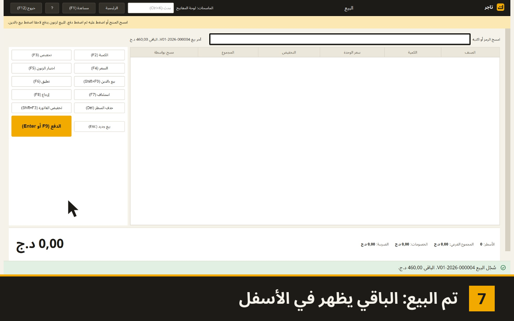
01. البيع نقدا- 02. البيع بالدين
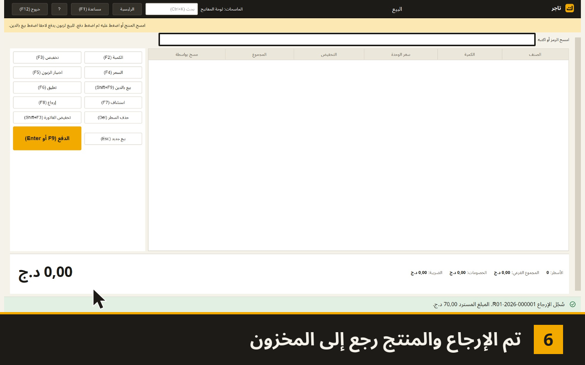
03. إرجاع بضاعة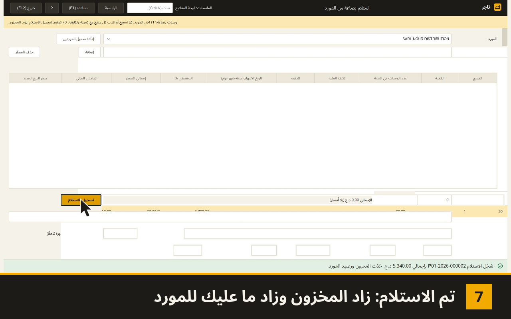
04. استلام بضاعة من المورد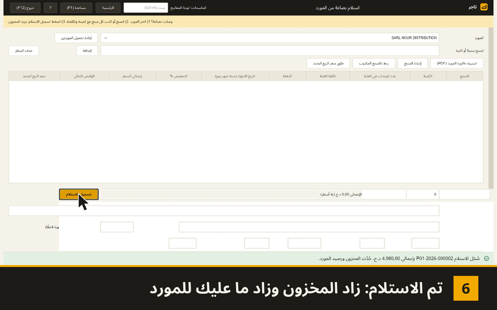
05. استيراد فاتورة PDF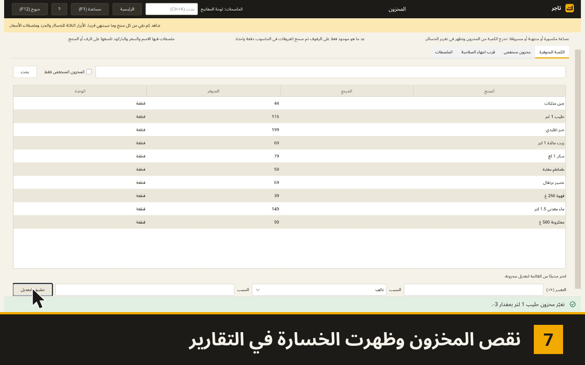
06. تسجيل تالف أو ضائع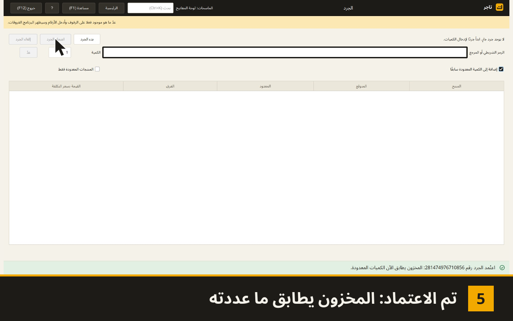
07. جرد المخزون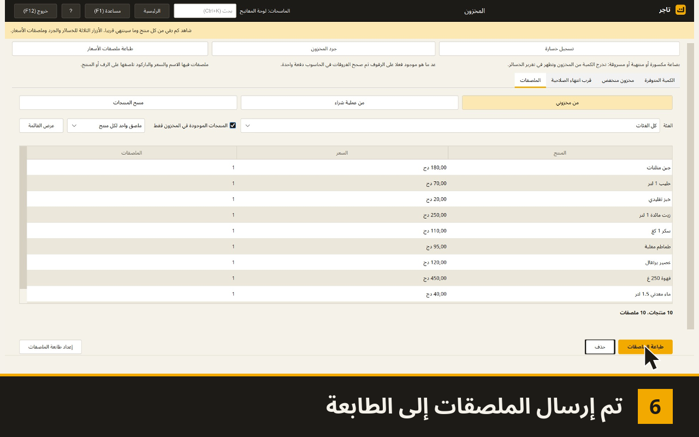
08. طباعة ملصقات الأسعار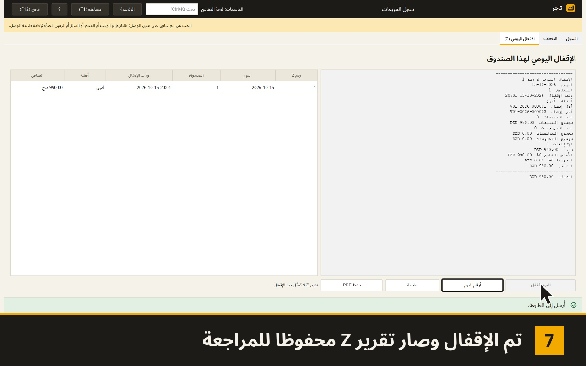
09. إغلاق اليوم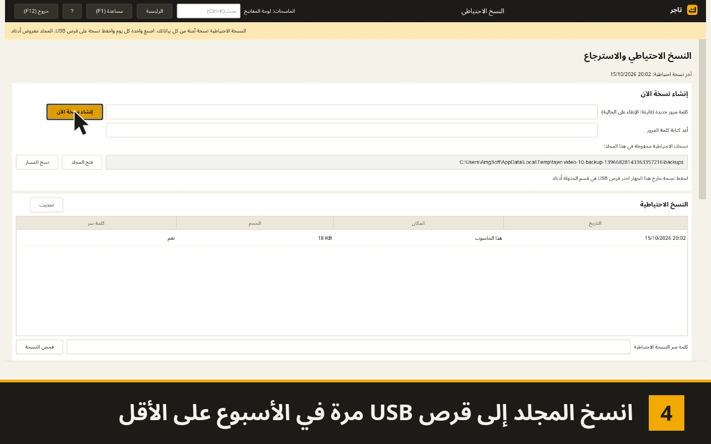
10. النسخ الاحتياطي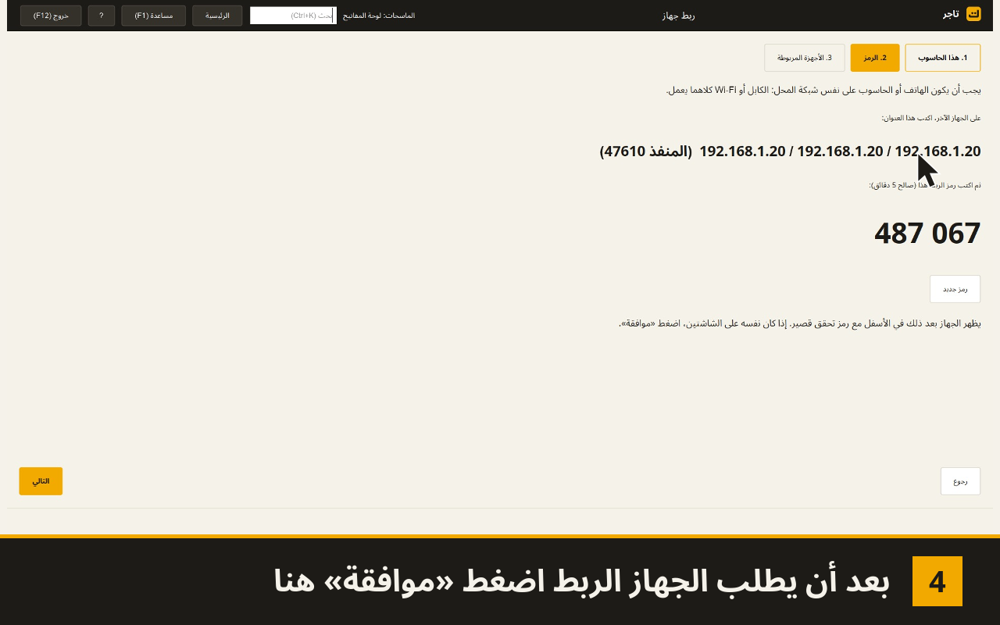
11. ربط جهاز آخر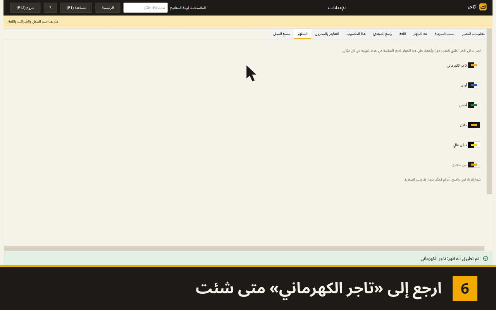
12. تغيير المظهر